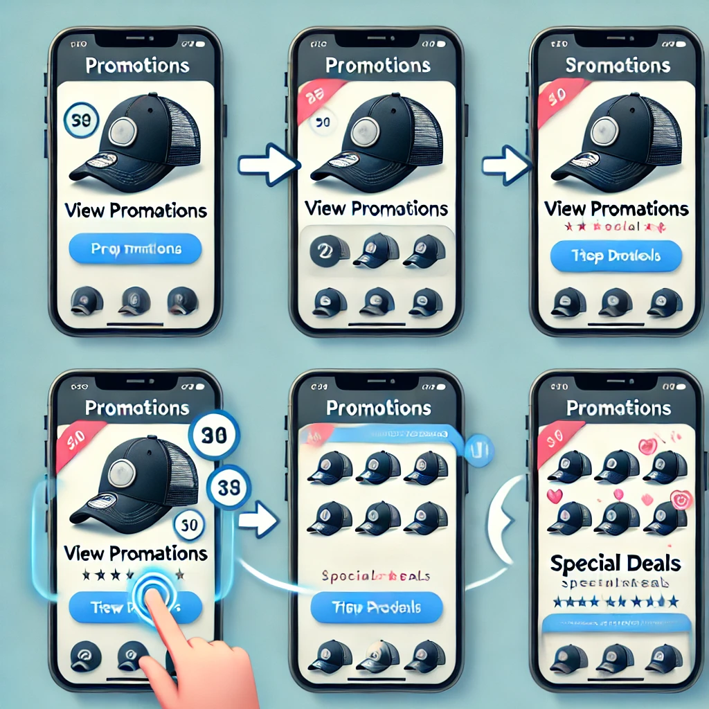

Cómo Saber si Hay Promociones o Descuentos

- Revisa la página principal de la tienda:
- Ingresa a la página de inicio de la tienda. Muchas tiendas destacan sus promociones en banners grandes en la parte superior de la página principal o en secciones especiales de "Ofertas" o "Descuentos".
- Busca una sección de “Promociones” o “Ofertas”:
- En el menú principal o en el pie de página, busca enlaces a secciones como “Promociones”, “Ofertas”, o “Descuentos”. Al hacer clic, serás dirigido a una página con todas las ofertas actuales de la tienda.
- Consulta el banner de inicio o las ventanas emergentes:
- Algunas tiendas muestran anuncios de descuentos a través de banners o ventanas emergentes cuando accedes al sitio por primera vez. Estos pueden mostrar códigos de descuento o promociones especiales.
- Suscríbete al boletín de la tienda (si está disponible):
- Si la tienda tiene un boletín de noticias, suele haber una opción para suscribirse en la página de inicio o en el pie de página. Al suscribirte, recibirás correos electrónicos que incluyen descuentos exclusivos y notificaciones de nuevas promociones.
- Revisa las redes sociales de la tienda:
- Muchas tiendas publican sus promociones en sus redes sociales. Dirígete a los perfiles de la tienda en plataformas como Instagram, Facebook o Twitter para ver si han anunciado algún descuento o evento especial.
- Consulta en la página de pago o en el carrito:
- A veces, los descuentos se aplican directamente en el carrito de compras o durante el proceso de pago. Puedes ver el descuento reflejado antes de finalizar la compra.